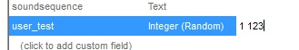

2 new custom field types are avaliable in "Custom" tabs of Edit forms: "Integer (Random)" and "Decimal (Random)". To use them, change UDMF field type to "Integer (Random)" or "Decimal (Random)" and enter value as 'min max'.
Example:
Here, field 'user_test' will be added to all selected map elements, and in all of them this field will have random value from 1 to 123:

Technical notice: These field types are sort of "virtual", because they cannot be saved in a map, so these types will be converted to "regular" Integer/Decimal after you click OK in the Edit form.